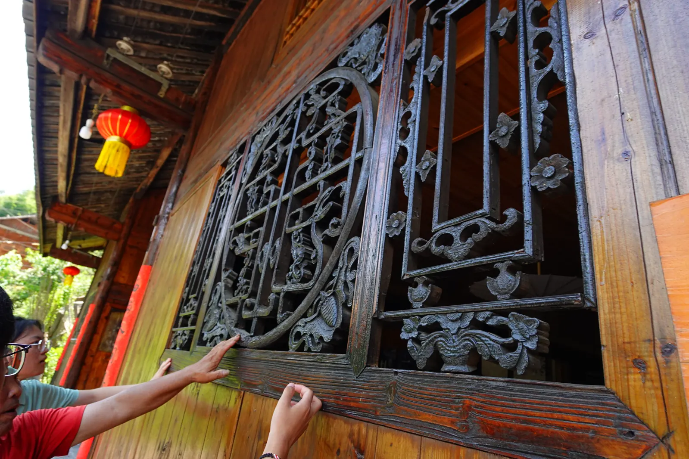
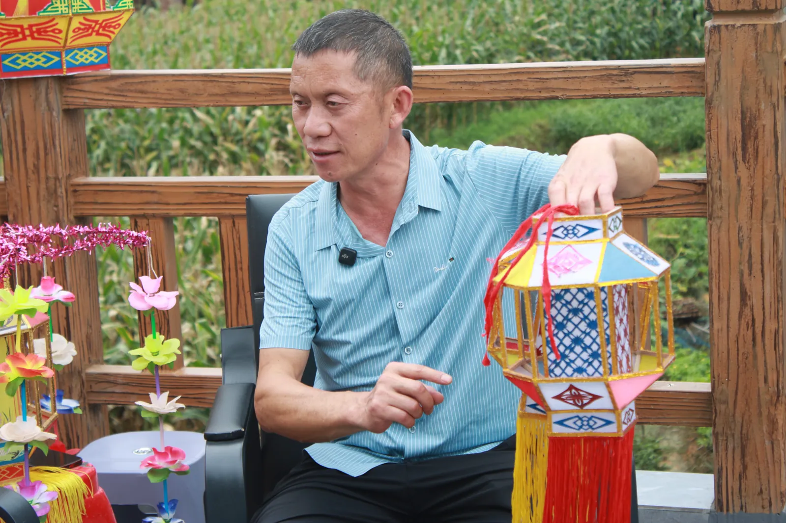
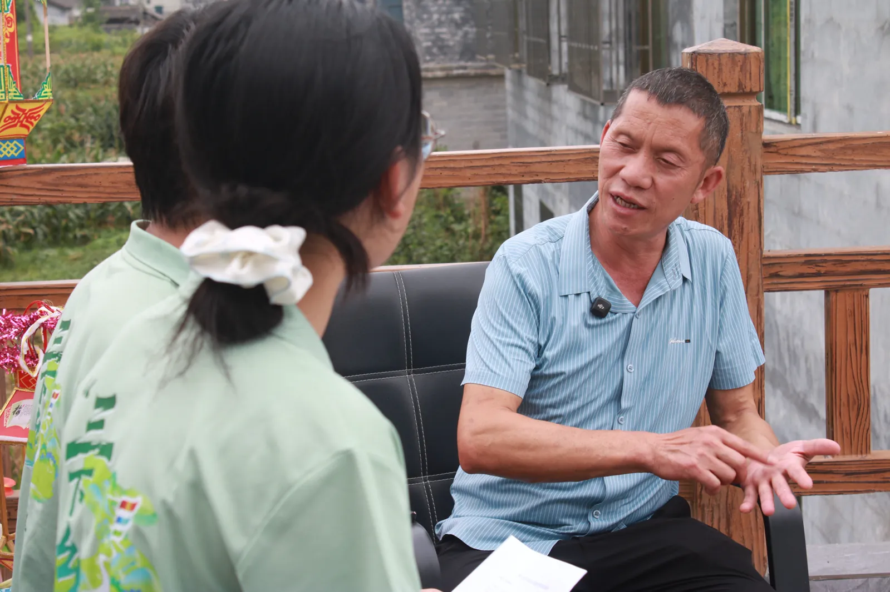

走进武陵山区，记录非遗脉搏，探寻产业振兴之路
秀山土家族苗族自治县位于重庆市东南隅，地处渝、湘、黔、鄂四省（市）交汇处，是武陵山区的重要节点。这里有国家级非遗秀山花灯、世代传唱的秀山民歌，也保留着大寨村座子屋、秀山紫砂石壶等富有地方特色的文化记忆。
2026年7月16日至22日，西南大学地理科学学院「重庆秀山锦秀小分队」共13名队员深入秀山，围绕非遗传承与产业振兴两条主线，开展为期7天的社会实践。团队设总统筹组、支教组、文化调研组、产业调研组、技术组、宣传组和后勤安全组，一人多职、协同作战。

支教组前往微电影城托管班；文化组深入大寨村测量座子屋、走访西兰卡普工坊；产业组走访玫瑰园国防教育基地
文化组走访文化馆、博物馆、非遗馆、天后宫、乌阳古码头；产业组前往武陵山国际电商产业园
各组集中整理调研数据与访谈记录；宣传组在各平台发布动态；技术组前往西街拍摄纪实与宣传视频素材
全体成员集中采访秀山民歌国家级非物质文化遗产代表性传承人何建勋老师，开展深度访谈、民歌学唱、花灯制作与表演体验，并进行街头民众非遗认知度调研
文化组前往客寨风雨桥、土司遗址实地调研；产业组线上补充产业数据，完善调研报告框架
各组集中整理全量调研资料；查漏补缺，搭建调研报告框架；全体总结会汇报进度，明确成果产出清单
与共青团秀山县委开展总结对接会，汇报实践成果；完成物资收尾；全员返程重庆
七个小组，一个信念——用青年视角记录秀山
对接学院团委、秀山团委及所有外部单位；统筹全局工作，制定活动计划和进度表
面向当地小学生开展红色文化、法治安全、地理科学、趣味科普等课程
围绕秀山花灯、秀山民歌、大寨村座子屋、秀山紫砂石壶开展调研和数字化记录
调研秀山电商与特色农业发展，实地走访武陵山国际电商产业园和玫瑰园国防教育基地
负责项目知识库整理、3D建模、网站建设、拍摄与数字化成果落地，并推进AI问答方案
运营公众号"锦秀青年在秀山"，制作推文、短视频，负责多平台投稿与传播
负责物资采购、食宿交通、安全保障、经费管理、应急预案
古韵秀山 · 文化寻根——记录武陵山区的非遗脉搏
秀山花灯是集舞蹈、音乐、扎彩为一体的民间艺术，2006年列入第一批国家级非物质文化遗产名录。团队采访了秀山民歌国家级非物质文化遗产代表性传承人何建勋老师，记录花灯起源传说、灯体寓意、制作工序以及当代传承困境。灯吊八节、灯尾鱼形、顶部六角宝盖等说法，来自何老师在本次采访中的口述。
秀山民歌是土家族、苗族人民世代传唱的音乐形式。何建勋老师作为傩戏第十一代传人，不仅精通花灯表演，更是民歌的活字典。经典曲目《黄杨扁担》《一把菜籽》传唱全国。团队成员在他的传习所里学唱经典曲目，记录珍贵的口传灯谣——"灯由唐朝起，灯由宋朝兴，仁宗皇帝登龙位，郭母娘娘瞎眼睛……"
文化调研组深入清溪场镇大寨村，对多栋不同年代、不同结构的典型座子屋进行了实地观察、测量与资料采集，并完成部分特色构件的三维建模。座子屋点位和文化资料仍在整理，交互式文化地图尚在完善中。
查看3D互动模型 →文化调研组来到秀山非遗文化体验馆，有幸与秀山紫砂石壶传承人向华清老师交流。团队成员了解了秀山紫砂石壶的历史渊源、石材特点与制作技艺，也被向老师对藏石文化的热爱与坚守所打动。秀山紫砂石壶凝结了地方石文化与传统技艺的创新表达，是传播秀山文化的一张独特名片。
秀山民歌国家级非物质文化遗产代表性传承人何建勋老师口述实录——记录花灯技艺、民歌传唱、傩戏家传与当代传承

秀山民歌国家级非物质文化遗产代表性传承人
傩戏第十一代传人
"灯由唐朝起，灯由宋朝兴。仁宗皇帝登龙位，郭母娘娘瞎眼睛。许下红灯三千六百盏，留下两盏到如今。"
—— 何建勋 · 口传灯谣
武陵山深处，渝湘黔鄂四省交界之地，有一座唤作秀山的小城。这里的风，吹过唐宋的灯影；这里的雨，润过千年的灯谣。
相传北宋年间，仁宗皇帝的生母遭"狸猫换太子"之祸，被贬冷宫，双目失明。仁宗登基后得知真相，为母亲许下三千六百盏红灯，祈愿光明重归。灯映长空，太后双目复明。从此，花灯由宫廷流传民间，一路南下，最终落进了秀山的深山长岭。
花灯客们代代口传，将这段往事编成灯谣，在起灯的夜里唱了又唱。那"留下两盏"，便是秀山花灯的灵魂——公灯与母灯。公灯属日，母灯属月；阳刚阴柔，日月相济。一盏灯里，藏着天地万物阴阳平衡的古朴哲理。
秀山地处武陵山腹地，山高路远，曾为"百里阻荒"之地。正是这方山水阻隔，让花灯在此落地生根，一守便是千年。2006年，秀山花灯列入首批国家级非物质文化遗产名录。
千年灯谣落到何建勋手里，便成了一根根木条、一张张花纸、一剪剪纹样。他说不起大道理，只信一句老话——手上有活，灯才有魂。
一盏花灯，处处是巧思，步步藏寓意。灯吊共八节，应一年八大节气；灯尾作鱼尾，翘首兆年年有余；灯上四瓣花，开尽四季春常在；顶覆六角宝盖，纳吉祥而顺遂。
选料量尺寸，拼接定型框，糊纸裱灯面，剪纸点灯魂。而最难、最核心、最讲究的，是手工剪纸。灯上的花纹，全靠一双巧手，一剪一落，皆是花。
何老师做剪纸时，手指翻飞如蝶。一把剪刀在他掌中翻转，纸屑簌簌落下，片刻之间，一朵牡丹便跃然纸上。他不用图纸，全凭心里有谱——四十年扎下来，什么花纹配什么灯体，早已烂熟于心。
何家还独创了带有自家灯班名号的"牌灯"——外出游灯时两人举牌，旁人一看便知是哪家灯班来历。更有体量大气的"余家花灯"，为何家独有款式，端庄华美，自成一派。
昔日秀山，村村有灯班，七八十支队伍走村串寨，锣鼓相闻，好不热闹；如今全县，凑得齐的灯班，一只手数得过来。繁华褪尽，唯余一痴翁，守着满屋花灯，不肯放手。
何建勋老师在采访中介绍，自己是何家傩戏第十一代传人，长期参与花灯制作、民歌传唱、技艺教学和灯班活动。2025年，他被认定为秀山民歌国家级非物质文化遗产代表性传承人。
五六岁时，他便发了痴。大雪封山，天寒地冻，走不动路，便让大人背着也要跟着灯班出去。唱曲、跳舞、敲锣打鼓，样样喜欢，发自内心地痴迷。
他更破了旧规矩。从前花灯只传男不传女，登台的全是男子，连幺妹子也由男子装扮。如今何老师收了许多女徒弟，乐于教导她们唱跳表演——男尊女卑成了旧话，灯班自此有了红妆。
读书不多、对电脑不甚熟练，他却花费多年时间，整理编撰了几十万字的傩戏书籍，正式出版。笔拙不碍志坚，字拙无妨心诚；几十万字成卷帙，留与后人照灯明。
守灯的人，不困于灯。何建勋心态平和，不计较成本，却也并不固守旧辙——他抬起头，看见了新时代的来路。
他构思将花灯做得小巧精致，方便游客携带；愿与景区合作，让花灯在文旅融合中慢慢推广开来。他叮嘱徒弟多借助抖音、短视频等线上平台传播花灯文化——线上覆盖面广，更多人看到，便会生起观赏兴趣。
更令人欣喜的是，他欣然接受了大学生团队用3D建模与交互式地图，将秀山非遗永久保存在网上的设想。即便实体空间有变动，文化也能被看见。千年的花灯，正借数字之翼飞入云端。
最后，何老师对当代大学生说出了心里话——
"希望你们大学生来交流采访不要走马观花，要做到实处。"
这话朴素，却重。走马观花者，只见花灯之形；做到实处者，方懂花灯之魂。
灯不灭，因有人守；艺不绝，因有人传。
农业+电商+物流：秀山融合发展的产业观察
走访清溪场镇玫瑰园国防教育爱国基地，了解特色农业与乡村文旅融合的发展实践。
深入武陵山国际电商产业园——建筑面积3.3万㎡，80余家企业入驻。泡泡玛特在此年产734万个盲盒，"秀源·轻山"品牌直接出口额达900万元，带动本地特产出口超1亿元。
秀山（武陵）现代物流园是重庆市首个市级物流园区，渝怀铁路上唯一300万吨战略装卸点，支撑"工业品+农产品"双轮出海模式。
数据来源：崔凯 (2021) 秀山电商学术报告 · 单位：亿元
数据依据：比赛材料中的当前项目汇总；原始问卷数据表尚待归档复核。
童心向党 · 智启未来——在孩子们眼中播下好奇的种子
支教组在微电影城托管班和党群服务中心托管班两处开展沉浸式趣味课堂
讲述秀山红色历史，刘邓大军进驻秀山的故事，传承革命精神
防溺水、交通安全、未成年人保护等法律常识普及
喀斯特地貌、武陵山区地理特征、家乡地图绘制
科学实验、自然观察、环保手工等互动体验课程
七天实践，用镜头定格每一个珍贵瞬间

多平台联动，让秀山故事被更多人听见
锦秀青年在秀山
公众号 ID：jinxiu_swu
阅读公众号推文，了解七天实践的全过程——从非遗传承到产业调研，从支教课堂到数字创新
成果整理中
实践成果正在整理中，将向中国青年网等官方平台投稿报道
敬请期待用技术赋能文化传播与乡村服务
从一盏花灯、一曲民歌，到古朴的座子屋与蓬勃的乡村产业，秀山的故事正在这里徐徐展开。向“锦秀问答”提问，循着真实记录走近这片山水，感受非遗传承与乡土新生。
点击后按需加载问答组件，不影响网站首次打开速度。
AI 生成内容可能存在误差，重要信息请以所列材料来源为准。
已将项目与团队、非遗访谈、产业调研、问卷口径等内容整理为经过核实的事实材料，并同步用于网站表述与“锦秀问答”。
座子屋点位和相关文化资料正在整理，地图结构与展示方式仍待完善，暂不作为已完成成果展示。
即您正在浏览的网站——基于纯前端技术构建的沉浸式成果展示平台，零成本部署于 GitHub Pages。
七天实践，一份沉甸甸的收获
感谢秀山土家族苗族自治县各级单位的大力支持
感谢秀山民歌国家级非物质文化遗产代表性传承人何建勋老师的真诚分享
感谢共青团秀山县委的全程指导与帮助
感谢西南大学地理科学学院的悉心指导
微信公众号
公众号 ID：jinxiu_swu